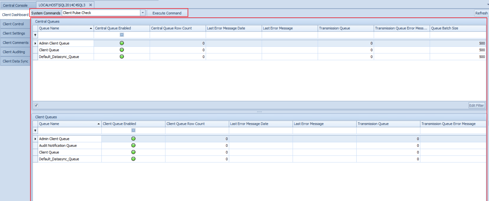

Client Dashboard Overview
The Client Dashboard screen is used to monitor all the queues for the selected client.

To understand this screen you will need to understand a little more of the queuing mechanism that Conductor4SQL uses. See the Queues Explained appendix section.
The screen is split into two different grids:
- Central Queues
- Client Queues
Each queue has a specific purpose:
- Admin Client Queue - This queue holds all the System Command and System Query messages.
- Client Queue - This queue holds all the User Command, User Query, Data File and File Pull messages.
- Default_Datasync_Queue - This is the default queue for all datasync messages
- Audit Notification Queue - This queue is used for all auditing events and it only visible if auditing is enabled
- User defined data sync queues - These queues are defined by the user for more advanced data sync.
Central Queues
This grid holds all the queues that are on the Central Server for the given client.
This grid has the following columns:
- Queue Name - This is either Admin Client Queue, Client Queue, Default_Datasync_Queue or a user defined queue.
- Central Queue Enabled - A Green dot indicates that the queue is enabled and a Red dot indicates that the queue is disabled.
- Central Queue Row Count - The number of messages that are on the queue waiting to be processed
- Last Error Message Date - The date/time that the last error occurred.
- Last Error Message - The full text error that occurred for the given queue.
- Transmission Queue - The number of outgoing message to the client that have not yet been received by the client.
- Transmission Queue Error Message - This column will hold any error that occurs when the message is getting sent to the client. e.g. "Connection attempt failed with error code: 12345"
- Queue Batch Size - The number of messages to attempt to process at once (default 500)
If you right click on any of the queues this grid you have the following context menu options:
- Disable Queue - Lets you disable the selected queue on central
- Enable Queue - Lets you enable the selected queue on central
- View Queue Messages - This option is only available if the Central Queue Row Count column has a value and it will show the first 30 messages that are on the queue.
- View Message Summary - View a summary of the total number of messages for each message type for the selected queue
- View Transmission Queue Summary - View a summary of the total number of message on the transmission queue for each message type for the selected queue Adjust Queue Batch Size - Increase or decrease the number of messages a queue can process on the selected queue.
Tip
Left clicking on any central queue will show the Central Queue Messages screen on the right.
Client Queues
This grid holds all the queues that are on the Client Server.
This grid has the following columns:
- Queue Name - This is either Admin Client Queue, Client Queue, Audit Notification Queue, Default_Datasync_Queue or a user defined queue.
- Client Queue Enabled - A Green dot indicates that the queue is enabled and a Red dot indicates that the queue is disabled.
- Client Queue Row Count - The number of messages that are on the queue waiting to be processed
- Last Error Message Date - The date/time that the last error occurred.
- Last Error Message - The full text error that occurred for the given queue.
- Transmission Queue - The number of outgoing message to the Central server that have not yet been received by Central.
- Transmission Queue Error Message - This column will hold any error that occurs when the message is getting sent to Central. e.g. "Connection attempt failed with error code: 12345"
If you right click on any of the queues this grid you have the following context menu options:
- Disable Queue - Lets you disable the selected queue on central
- Enable Queue - Lets you enable the selected queue on central
- View Queue Messages - This option is only available if the Central Queue Row Count column has a value and it will show the first 30 messages that are on the queue.
- View Message Summary - View a summary of the total number of messages for each message type for the selected queue
- View Transmission Queue Summary - View a summary of the total number of message on the transmission queue for each message type for the selected queue
- Remove Top N Poison messages - Allows you to remove messages on the queue that either you don't want to process or they are giving errors.
Tip
Left clicking on any client queue will show the Client Queue Messages screen on the right.